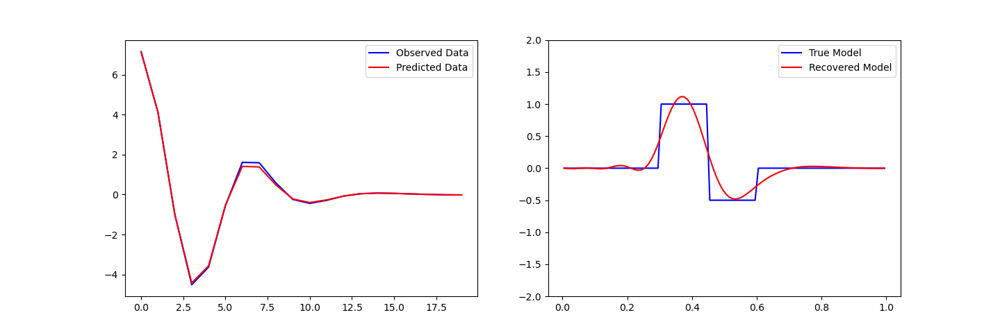

Setting up your environment#
Install Python#
First you will need to install Python. You can find instructions in Prerequisite: Installing Python. We highly encourage to install Anaconda or Mambaforge.
Create environment#
To get started developing SimPEG we recommend setting up an environment using
the conda (or mamba) package manager that mimics the testing
environment used for continuous integration testing. Most of the packages that
we use are available through the conda-forge project. This will ensure you
have all of the necessary packages to both develop SimPEG and run tests
locally. We provide an environment_test.yml in the base level directory.
To create the environment and install all packages needed to run and write code for SimPEG, navigate to the directory where you cloned SimPEG’s repository and run:
conda env create -f environment_test.yml
Note
If you find yourself wanting a faster package manager than conda
check out the mamba project at https://mamba.readthedocs.io/. It
usually is able to set up environments much quicker than conda and
can be used as a drop-in replacement (i.e. replace conda commands with
mamba).
Once the environment is successfully created, you can activate it with
conda activate simpeg-test
Install SimPEG in developer mode#
There are many options to install SimPEG into this local environment, we recommend using pip. After ensuring that all necessary packages from environment_test.yml are installed, the most robust command you can use, executed from the base level directory would be:
pip install --no-deps -e .
This is called an editable mode install (-e). This will make a symbolic link
for you to the working simpeg directory for that Python environment to use
and you can then make use of any changes you have made to the repository
without re-installing it. This command (–no-deps) also ensures pip won’t
unintentionally re-install a package that was previously installed with conda.
This practice also allows you to uninstall SimPEG if so desired:
pip uninstall SimPEG
Note
We no longer recommend modifying your Python path environment variable as a way to install SimPEG for developers.
Check your installation#
You should be able to open a terminal within SimPEG/tutorials and run an example, i.e.
python 02-linear_inversion/plot_inv_1_inversion_lsq.py
or you can download and run the notebook from the docs.
You are now set up to SimPEG!
Note
If all is not well, please submit an issue and change this file!
Configure pre-commit (optional)#
We recommend using pre-commit to ensure that your new code follows the code style of SimPEG. pre-commit will run Black and flake8 before any commit you make. To configure it, you need to navigate to your cloned SimPEG repo and run:
pre-commit install
Note
Using pre-commit is recommended, but not necessary. You can still
manually run Black and flake8. See our Code style page for more
details.
If for some reason you want to stop using pre-commit on SimPEG, you can
permanently configure it to stop running automatically with:
pre-commit uninstall
Alternatively, you can temporarily bypass pre-commit when committing some changes by running:
git commit --no-verify
This is specially useful if the checks run by pre-commit are failing, but
you want to commit them nonetheless.